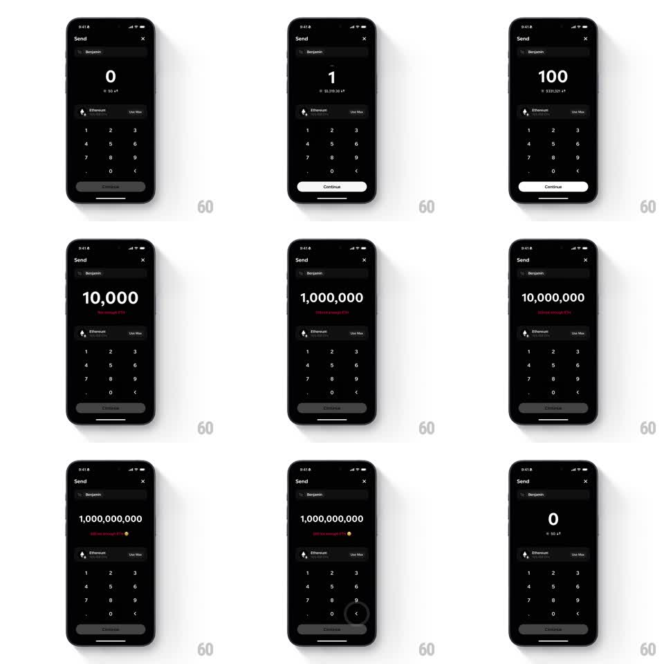

Media
Frame-by-frame

Rebuild this interaction 1:1: Family's over-balance easter egg - on the dark Send screen to Benjamin, typing an amount past the balance scales the big number down as digits grow and reveals escalating red error jokes under the ETH conversion, ending with a tiny easter-egg emoji at "1,000,000,000".

Rebuild this interaction 1:1: Family's over-balance easter egg - on the dark Send screen to Benjamin, typing an amount past the balance scales the big number down as digits grow and reveals escalating red error jokes under the ETH conversion, ending with a tiny easter-egg emoji at "1,000,000,000".
## Integration
Integration: stack-agnostic spec - springs given as stiffness/damping, timed motions as duration + curve; map every value to your framework and animation library of choice.
## Scene
Dark Send screen: "To: Benjamin" row, giant centered amount starting at "0" ("$0"), Ethereum asset row with "Use Max", numpad, Continue (disabled gray until valid). As digits grow: "1" ($3,319.38), "100" ($331,321), "10,000", "1,000,000", "10,000,000", "1,000,000,000" - red error lines appear under the conversion text, getting more exasperated, with a small emoji appearing at the billion mark. Continue stays disabled.
## Motion spec
Pattern: adaptive text scaling with staged error reveals.
- Each keypress: the new digit rolls in (digit slide-up 150ms, ease-out), the amount string re-centers, and the font size steps down through discrete sizes (e.g. 72 -> 64 -> 56 -> 48 -> 40pt) with a 200ms ease so the full number always fits one line.
- The fiat conversion under the amount updates with a digit roll (150ms).
- Once the amount passes the balance, the red error line fades in (200ms, translateY 4pt -> 0); each larger threshold swaps the message (crossfade 150ms) with escalating copy.
- At the final threshold a small emoji fades in at the end of the error line (scale 0.5 -> 1, spring ~340/16, 200ms).
- Deleting back down reverses the size steps and dismisses the error (fade 150ms) the moment the amount fits the balance; Continue re-enables (gray -> white, 200ms).
## Calibration
- Text shrinks by steps, never continuously - each digit count maps to one size.
- Red is reserved for the error line; the amount itself stays white.
## Reduced motion
Digits and error lines crossfade (150ms); no spring pops.
## Don't miss
- The error copy escalates in tone across thresholds - it is a joke that builds, not one static message.
- The numpad stays fully usable while the error shows; the flow is playful, not blocking.